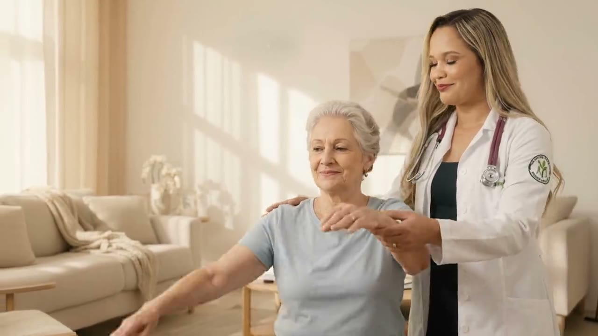

Fisioterapia na sua casa
Atendimento fácil, rápido, e prático, agende ainda hoje!
Um cuidado completo para você viver melhor. Tratamentos com abordagens direcionadas às necessidades de cada paciente.
- Fisioterapia integrativaEquilíbrio, bem-estar e qualidade de vidaConsultar
- Tratamento da dorDores musculares, articulares e crônicasConsultar
- Reabilitação pós-operatóriaRecuperação dos movimentos após cirurgiaConsultar
- Terapia manualMenos tensão muscular, mais mobilidadeConsultar
- Atendimento domiciliarTodo o cuidado na sua própria casaConsultar

Como o atendimento acontece
-
Você escreve pelo WhatsApp
Conte o que está sentindo e em que bairro você está. A Dra. Suany combina o primeiro horário.
-
A avaliação é feita na sua casa
Ela avalia movimento, força e dor no ambiente onde você vive todo dia.
-
O plano é ajustado a cada sessão
O tratamento é revisto conforme você responde ao longo das semanas.
O que os pacientes escreveram.
Avaliações no Google
Quem vai até a sua casa
A Dra. Suany Carvalho é fisioterapeuta há mais de oito anos e atende exclusivamente em domicílio, em Osasco e na zona oeste de São Paulo.
O atendimento em casa muda o que ela consegue ver: a altura da cama, o degrau do corredor, a distância até o banheiro. O plano de tratamento é construído sobre isso, e não sobre um aparelho de consultório.
Quem acompanha o paciente em casa participa das sessões e recebe as orientações, porque a maior parte da recuperação acontece entre uma visita e outra.
Perguntas
Tire suas dúvidas antes de marcar a avaliação.
Osasco e a zona oeste de São Paulo. Escreva dizendo o seu bairro e ela confirma se atende na região.
Não. A Dra. Suany leva o material necessário e usa o próprio ambiente da casa durante as sessões.
Se você já tem relatório, exame ou encaminhamento, leve para a avaliação. Isso ajuda a montar o plano de tratamento.
Sim, e é recomendado. As orientações para o período entre as sessões são passadas para quem acompanha.
Pelo WhatsApp. Conte o que está sentindo, há quanto tempo e em que bairro você está.